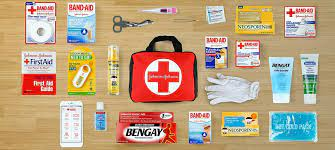

Physical Health: Medical Self-Care and Checkup
What is self-care and why does it matter to me?
It pays to take charge of your healthcare. Adopting a healthy lifestyle, getting preventive care, doing your research and having a strong partnership with your healthcare provider has plenty of benefits. Following the guidelines and recommendations to good health can lead to a better health experience, a collaborative relationship with your care providers, and, ultimately, better health outcomes.
Preventive Care
Prevention starts at home. It includes your personal safety, making healthy lifestyle choices and getting preventive screenings and vaccinations.
Be safe. Take steps to avoid or reduce risks while you are at your home, at work or school, driving, playing sports and doing chores.
Don't smoke. If you are not a smoker, congratulations! Don't start. If you smoke, start thinking about quitting. It is not easy giving up something that is so much a part what you do everyday. However the reward of a tobacco free lifestyle is remarkable.
Get necessary care. Make sure you schedule regular healthcare checkups and recommended healthcare screenings such as cancer and STD tests.
Make healthy choices. Minimizing alcohol consumption, practicing safe sex, eating nutrient-rich food, getting plenty of physical activity and finding ways to manage stress can decrease your risk factor for many illnesses.
Pay attention to your body
Being tuned into your body can help you to realize when something is out of balance. You may have not considered this, but one of the most important things that you can do for your well-being is to make wise decisions when you feel that something is wrong. Paying attention to your symptoms can also help you communicate more effectively with your healthcare provider.
When you reflect on your choices this way, you make better healthcare decisions and use your medical services more cost effectively. It is important to know when and how to treat yourself at home and when to go to the doctor.
First Aid Kit Essentials
